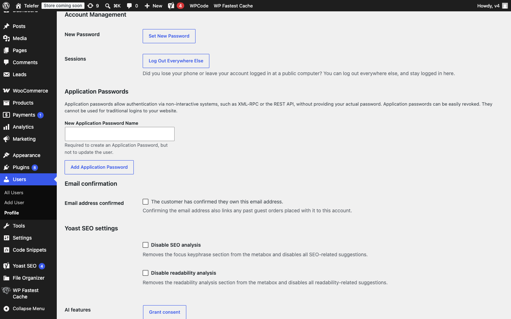
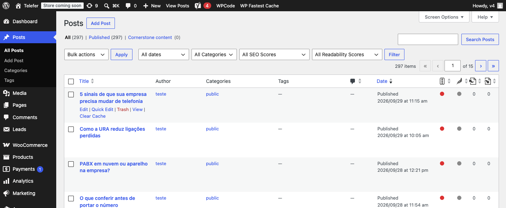
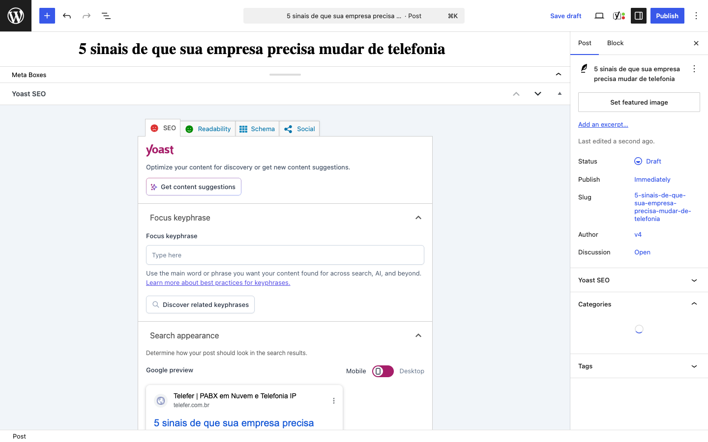
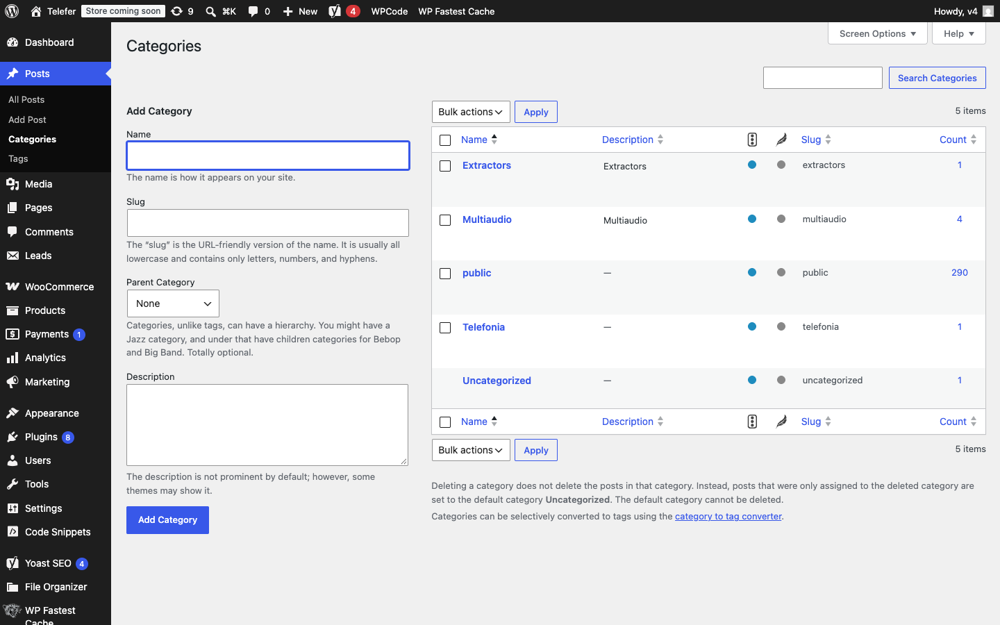
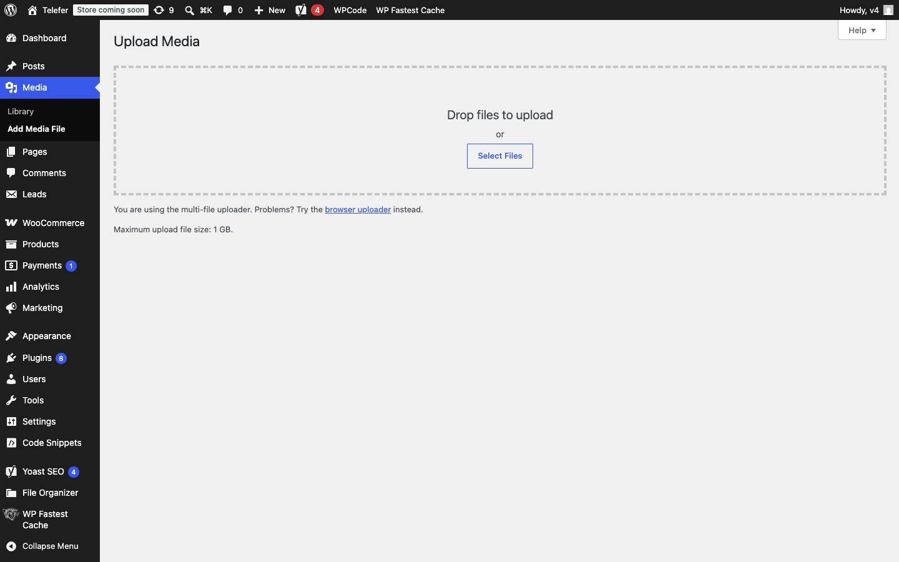
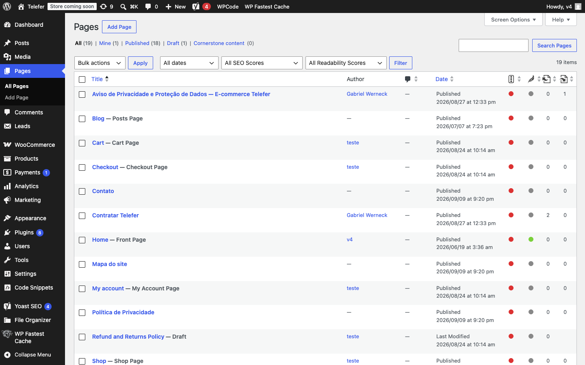
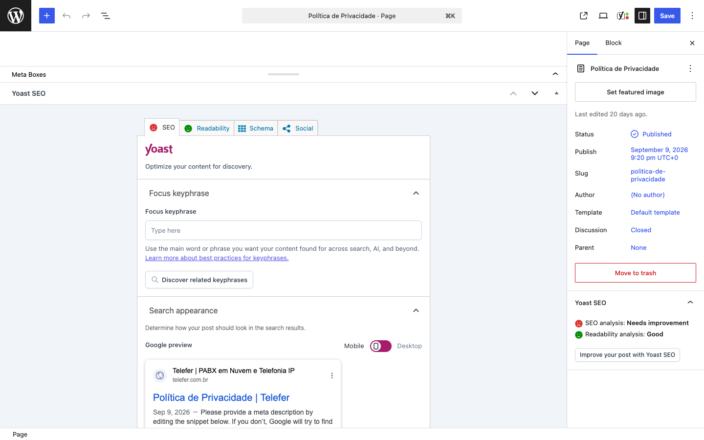
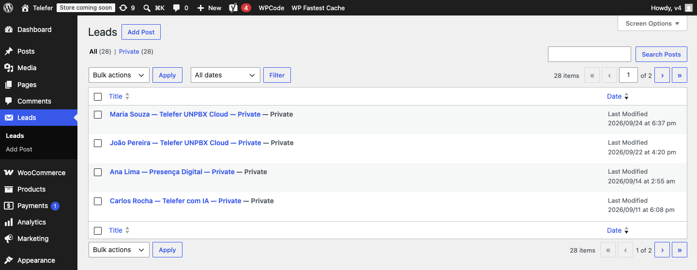
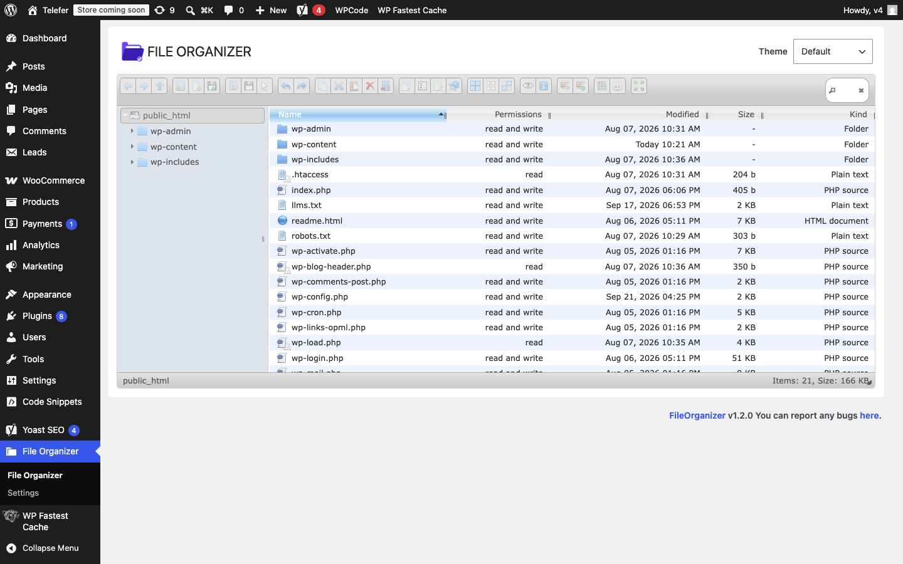

O painel está em inglês. Cada print abaixo é a tela que você vai ver. O nome em português está entre parênteses na primeira vez que o botão aparece.
1. Como o site funciona hoje
O visual (cores, seções, cards) vem do tema Telefer. O painel continua sendo o WordPress. O Elementor não monta mais a Home, o Sobre, as Soluções nem o Contato.
| O que você quer mudar | Onde clicar | Onde aparece no site |
|---|---|---|
| Artigo novo ou correção de artigo | Posts → Add Post / All Posts | telefer.com.br/blog/ |
| Filtro do Blog (Telefonia, Automação…) | Posts → Categories | Botões de filtro em /blog/ |
| Foto dentro de um artigo | Media → Add Media File, ou o bloco de imagem no editor | No corpo do artigo |
| Texto da Política de Privacidade | Pages → Política de Privacidade | /politica-de-privacidade/ |
| Quem preencheu formulário | Leads | Só no painel |
| Frase ou foto de Home, Sobre, Cloud, IA, Presença digital, Contato, rodapé | File Organizer (seção 10) | A página correspondente |
O campo grande de texto das páginas Home, Sobre, Soluções e Contato não muda o layout. Essas frases ficam em arquivos do tema. A seção 10 mostra o arquivo, a frase para buscar e o que pode ser trocado.
2. Entrar no painel e trocar a senha
- Abra https://telefer.com.br/wp-admin/.
- Em Username or Email Address (usuário ou e-mail), digite o usuário da sua conta.
- Em Password (senha), digite a senha. O ícone do olho mostra o que você digitou.
- Clique em Log In (entrar).

Esqueceu a senha
- Na mesma tela, clique em Lost your password?
- Digite o e-mail da conta e envie.
- Abra o e-mail (olhe também o spam) e clique no link.
- Digite a senha nova duas vezes e salve.
- Volte para /wp-admin/ e entre com a senha nova.
Trocar a senha com o painel já aberto
- No canto superior direito, clique em Howdy, seu-usuário.
- Clique em Profile (perfil). O mesmo item está em Users → Profile no menu esquerdo.
- Role até o bloco Account Management.
- Clique em Set New Password (definir nova senha).
- Apague a senha sugerida e digite a sua. A barra de força precisa passar de “weak”.
- Role até o fim da página e clique em Update Profile (atualizar perfil).

3. Mapa do menu esquerdo
Depois do login, a coluna preta da esquerda é o menu. No dia a dia, use estes itens:
| Menu (como está na tela) | Para que serve |
|---|---|
| Posts | Artigos do Blog. Subitens: All Posts, Add Post, Categories. |
| Media | Enviar imagem. Subitens: Library e Add Media File. |
| Pages | Abrir a Política de Privacidade. Não apague as outras páginas. |
| Leads | Formulários recebidos. Ler, não publicar. |
| File Organizer | Trocar uma frase ou uma foto que está no tema (seção 10). |

Não instale plugin, não mude o tema em Appearance → Themes, não abra o Elementor para remontar a Home e não clique em Move to trash nas páginas Home, Sobre, Soluções, Contato ou Política de Privacidade. O visual atual não depende dessas ações, e apagar uma página tira o endereço do ar.
4. Criar um artigo do Blog
No site público, o card do artigo usa título, resumo, categoria, data e imagem destacada.

4.1 Abrir o editor
- No menu esquerdo, clique em Posts.
- Clique em Add Post (adicionar artigo). O botão também fica no topo da lista All Posts.
4.2 Preencher, nesta ordem

- Título — clique na área grande “Add title” e escreva o título. Ele aparece no card e no topo do artigo. Exemplo: 5 sinais de que sua empresa precisa mudar de telefonia.
- Texto — clique abaixo do título, onde está o cursor do parágrafo, e cole o conteúdo. No Mac, cole sem formatação com Cmd+Shift+V. No Windows, Ctrl+Shift+V. Para um subtítulo, selecione a linha e, no bloco, escolha Heading.
- Imagem no meio do texto — com o cursor numa linha vazia, clique no + azul do canto superior esquerdo, busque Image, escolha Upload ou Media Library.
- Resumo — na coluna da direita, clique em Add an excerpt… Escreva 2 ou 3 linhas. Esse texto é o do card no /blog/. Se o link não aparecer, clique nos três pontinhos do canto superior direito do editor → Preferences → Panels → ligue Excerpt.
- Categoria — na coluna da direita, abra Categories e marque uma destas: Telefonia, Automação, Marketing Digital, Dicas ou Finanças. Se o nome ainda não existir, crie na seção 6 e volte aqui. Deixe desmarcado Uncategorized e public.
- Imagem destacada — na coluna da direita, clique em Set featured image (definir imagem destacada) → Upload files → envie um JPG ou PNG de pelo menos 1200 × 800 pixels → clique em Set featured image de novo para confirmar. Essa foto é a do card e a do topo do artigo.
4.3 Publicar
- Save draft (salvar rascunho), no topo direito, se ainda for revisar. Rascunho não aparece no site.
- O ícone de monitor ao lado de Save draft abre a pré-visualização.
- Quando estiver pronto, clique no botão azul Publish (publicar). Abre um painel de confirmação: clique em Publish de novo.
- Clique em View Post e copie a URL. Esse é o endereço definitivo do artigo.
Na coluna da direita, Status precisa estar Published depois da publicação. Enquanto estiver Draft, o artigo não entra no /blog/.
5. Editar, despublicar ou apagar um artigo
Em Posts → All Posts, passe o mouse no título. Aparecem os links Edit, Quick Edit, Trash e View, como na primeira linha do print da seção 3.
Editar
- Posts → All Posts.
- Passe o mouse no título e clique em Edit.
- Altere título, texto, resumo, categoria ou imagem.
- Clique em Update (atualizar) no topo direito. Em artigo já publicado o botão azul deixa de se chamar Publish e passa a se chamar Update.
- Abra o artigo no site e atualize forçado (seção 11).
Tirar do ar sem apagar
- Abra o artigo em Edit.
- Na coluna da direita, clique em Status.
- Troque Published para Draft.
- Clique em Update.
O artigo some do /blog/ e continua na lista do painel, no filtro Draft, para você republicar depois.
Apagar
- All Posts → passe o mouse no título → Trash (lixeira).
- Para apagar de vez: no topo da lista, clique no filtro Trash → passe o mouse no título → Delete Permanently.
6. Categorias do Blog
Os filtros públicos do Blog são estes cinco nomes, com acento e espaço exatamente assim:
- Telefonia — slug telefonia
- Automação — slug automacao
- Marketing Digital — slug marketing-digital
- Dicas — slug dicas
- Finanças — slug financas

Na tela atual, a categoria oficial que já existe é Telefonia. Automação, Marketing Digital, Dicas e Finanças você cria quando for usar:
- Posts → Categories.
- No campo Name, digite o nome oficial (por exemplo Automação).
- No campo Slug, digite o slug da lista acima, sem acento.
- Parent Category deixe em None.
- Clique em Add Category.
No artigo, marque só uma categoria oficial. Não marque Uncategorized nem public. Não apague a categoria public: ela já está ligada a centenas de itens antigos, e apagar jogaria esses itens para Uncategorized.
Não crie nome parecido (“Dica”, “Financeiro”, “Telefonia IP”). O filtro do site procura o nome oficial.
7. Enviar foto na Biblioteca de Mídia

- Menu Media → Add Media File.
- Arraste o arquivo para a área pontilhada ou clique em Select Files.
- Espere a barra de progresso terminar.
- Abra Media → Library e clique no arquivo.
- À direita, preencha Alternative Text (texto alternativo): uma frase que descreve a foto.
- O campo File URL é o endereço do arquivo, se você precisar copiar.
Use JPG ou PNG. Para o site carregar rápido, deixe a foto com menos de 2 MB (no app Fotos ou Preview, exporte com qualidade 80). A tela aceita arquivo maior, mas foto pesada deixa a página lenta.
Foto da fachada, do time ou de uma seção da Home não entra no site só por estar na Mídia. Guarde a cópia aqui e faça a troca do arquivo do tema na seção 10.2, com o mesmo nome.
8. Política de Privacidade
Essa página usa o texto do editor. O que você salvar aqui é o que o site mostra em /politica-de-privacidade/.

- Menu Pages → All Pages.
- Clique no título Política de Privacidade. Não abra “Aviso de Privacidade e Proteção de Dados — E-commerce Telefer”: essa é outra página.
- Edite o texto no centro do editor. A caixa rosa do Yoast não é o texto da página; role ou recolha essa caixa pela setinha.
- Clique em Save (salvar), no topo direito.
- Abra https://telefer.com.br/politica-de-privacidade/ e confira.

Na lista de Pages existem Home, Contato, Blog e as páginas da loja. Não apague, não clique em Move to trash e não troque o campo Template. Deixe em Default template.
9. Ver leads recebidos

- No menu esquerdo, clique em Leads.
- Clique no título da linha para abrir o registro.
- Leia nome, telefone, e-mail e mensagem no conteúdo.
- Para voltar à lista, clique em Leads de novo.
Isso não publica nada no site. É a caixa de entrada dos formulários. Não use Add Post dentro de Leads.
10. Trocar texto ou foto de Home, Sobre, Cloud e Contato
Frases como “Ativação em até 20 dias após contratação”, a foto da fachada e o texto do rodapé ficam em arquivos do tema. Você troca isso no próprio painel, no File Organizer.

10.1 Trocar uma frase
Exemplo real: na página Telefer Cloud, bloco Como funciona, a linha do prazo.
- Menu File Organizer.
- Dê dois cliques, nesta ordem: wp-content → themes → telefer → template-parts → services.
- Clique uma vez em unpbx-features.php.
- Na barra de ícones acima da lista, baixe uma cópia do arquivo (ícone de download / seta para baixo). Guarde esse arquivo no seu computador com o nome unpbx-features.php. Essa cópia é o seu backup.
- Dê dois cliques no mesmo arquivo para abrir o editor.
- Busque a frase atual com Cmd+F (Mac) ou Ctrl+F (Windows). No exemplo: Ativação em até 20 dias após contratação.
- Troque só as palavras dentro das aspas simples. A linha continua com __(, vírgula e 'telefer'.
- Salve pelo ícone de disquete (ou Save) do editor do File Organizer. Espere a confirmação.
- Abra a página Cloud com ?telefer_nocache=1 no final da URL e leia o bloco Como funciona.
Mude uma frase por vez. Não apague <?php, parênteses, vírgulas nem aspas. Se a página abrir em branco depois de salvar, volte ao File Organizer, entre na mesma pasta e envie de novo o arquivo que você baixou no passo 4, com o mesmo nome, substituindo o atual. A página volta.
10.2 Trocar a foto da fachada (Sobre nós)
A foto da seção Nossa Estrutura é este arquivo, com este nome:
wp-content/themes/telefer/assets/images/about/fachada.jpg
- Prepare a foto em JPG, largura de 1600 pixels ou mais, prédio inteiro.
- Envie uma cópia também em Media (seção 7), para não perder o original.
- File Organizer → dois cliques: wp-content → themes → telefer → assets → images → about.
- Clique uma vez em fachada.jpg e baixe a cópia atual (backup).
- Na barra de ícones, clique em enviar arquivo (seta para cima) e escolha a foto nova.
- Quando o programa perguntar se substitui, confirme. O nome final tem que continuar fachada.jpg. Se o envio criar fachada-1.jpg, apague esse arquivo extra, renomeie a foto no seu computador para fachada.jpg e envie de novo por cima da original.
- Abra https://telefer.com.br/sobre/, role até Nossa Estrutura e atualize forçado.
10.3 Onde está cada texto
Abra o arquivo, busque a frase da coluna do meio e troque só o miolo entre aspas. O caminho sempre começa em wp-content/themes/telefer/.
| Página | Frase para buscar (exemplo do que está no ar) | Arquivo |
|---|---|---|
| Home | PABX em Nuvem e Telefonia IP | template-parts/sections/hero.php |
| Home — por que empresas perdem | Linha ocupada | template-parts/sections/pain-points.php |
| Home — diferenciais | Blindagem de faturamento | template-parts/sections/diferenciais.php |
| Home — como funciona | Simples de começar | template-parts/sections/process.php |
| Home — soluções | Uma única plataforma para organizar todo seu atendimento | template-parts/sections/solutions.php |
| Home — perguntas | Quanto tempo leva a instalação? | template-parts/sections/faq.php |
| Home — chamada final | Quero falar com um especialista | template-parts/sections/cta-final.php |
| Sobre nós | Nossa História | template-parts/about/history.php |
| Sobre — fachada | arquivo fachada.jpg | assets/images/about/fachada.jpg |
| Sobre — pilares e estrutura | Nossos Pilares | template-parts/about/pillars.php e structure.php |
| Página Soluções | Tecnologia de comunicação para cada etapa do atendimento | page-solucoes.php |
| Telefer Cloud — prazo | Ativação em até 20 dias após contratação | template-parts/services/unpbx-features.php |
| Telefer Cloud — lista de funções | Ramais ilimitados | template-parts/services/unpbx-functionalities.php |
| Telefer Cloud — benefícios | Mobilidade Total | template-parts/services/unpbx-benefits.php |
| Telefer com IA | abra o arquivo e busque a frase que você vê na página | page-telefer-ia.php e a pasta template-parts/telefer-ia/ |
| Presença digital | abra o arquivo e busque a frase da página | page-presenca-digital.php |
| Contato | Fale com a Telefer | page-contato.php |
| Menu e rodapé | Links Rápidos | header.php e footer.php |
| Blog | não use arquivo PHP para publicar artigo | Posts no painel (seções 4 e 5) |
A lupa no canto superior direito do File Organizer busca pelo nome do arquivo. Digite fachada.jpg ou unpbx-features.php se não quiser abrir pasta por pasta.
11. Conferir no site
- Salve no painel (Publish, Update, Save ou o disquete do File Organizer).
- Abra a página numa aba anônima, ou acrescente ?telefer_nocache=1 no final. Exemplo: https://telefer.com.br/blog/?telefer_nocache=1
- Atualize forçado: Windows Ctrl+F5 · Mac Cmd+Shift+R.
Se a alteração não aparecer, confira nesta ordem:
- Artigo: Status está Published, não Draft?
- Categoria do artigo é um dos cinco nomes oficiais?
- Imagem do tema ficou com o mesmo nome de arquivo?
- No PHP, o texto novo ainda está entre aspas simples e a linha não perdeu vírgula?
- Você abriu a URL com ?telefer_nocache=1?
12. Checklist
Artigo novo: Posts → Add Post → título, texto, Add an excerpt, 1 categoria oficial, Set featured image → Publish → View Post → atualizar forçado.
Corrigir artigo: All Posts → Edit → Update.
Tirar artigo do ar: Status → Draft → Update.
Política: Pages → Política de Privacidade → editar o texto → Save. Não clicar em Move to trash.
Lead: menu Leads → abrir o título.
Frase do Cloud: File Organizer → baixar cópia de template-parts/services/unpbx-features.php → trocar só o texto entre aspas → salvar → abrir a página com ?telefer_nocache=1.
Foto da fachada: File Organizer → assets/images/about/fachada.jpg → baixar a atual → enviar a nova com o mesmo nome.
Página em branco depois de salvar um PHP: File Organizer → mesma pasta → enviar de volta o arquivo que você baixou, com o mesmo nome.